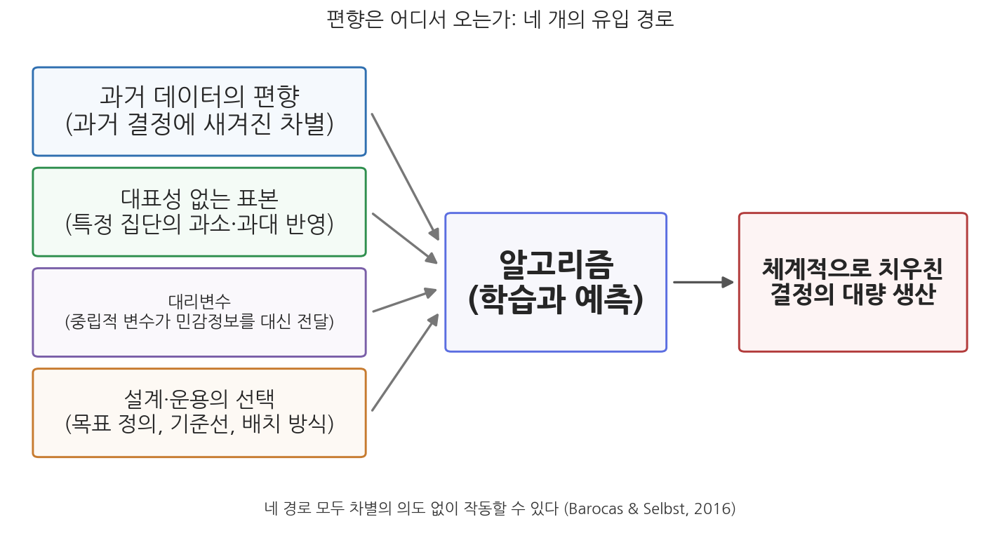
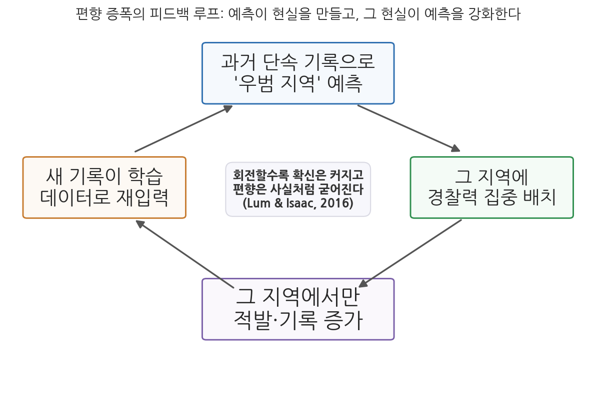

5주차 1차시. AI와 형평성 (1): 알고리즘 편향의 원천
모형이란 수학에 새겨 넣은 의견이다. (캐시 오닐, 『대량살상 수학무기』, 2016)
이 장에서 배우는 것
2018년 10월, 로이터 통신은 아마존이 수년간 비밀리에 개발해 온 AI 채용 도구를 폐기했다고 보도했다. 지원자의 이력서를 자동으로 평가해 별점을 매기는 시스템이었는데, 개발 도중 이 시스템이 여성 지원자를 체계적으로 낮게 평가한다는 사실이 드러났다. 이력서에 "여성(women's)"이라는 단어, 예컨대 "여성 체스 동아리 회장"이 들어 있으면 감점되었다. 흥미로운 점은 아무도 시스템에 "여성을 감점하라"고 지시하지 않았다는 것이다. 시스템은 그저 지난 10년간 회사에 제출된 이력서, 즉 남성이 압도적으로 많았던 과거의 채용 기록을 충실히 학습했을 뿐이다(사례의 자세한 경과는 다음 차시에서 읽는다).
이 사건은 이번 주의 질문을 압축해서 보여 준다. 차별할 의도가 없는데도 왜 AI는 차별하는가. 기계는 감정도 편견도 없으니 사람보다 공정하리라는 기대는 어디서부터 잘못되었는가. 4주차에서 우리는 AI가 잘못된 결정을 내렸을 때 "누가 책임지는가"를 물었다. 이번 주는 그 잘못된 결정 가운데 가장 심각한 유형, 곧 특정 집단에 체계적으로 불리한 결정을 다룬다. 판단의 잣대는 효율성도 투명성도 아닌 또 하나의 행정가치, 형평성이다. 이 1차시는 편향이 어디서 어떻게 흘러들어 오는지 그 원천을 해부하고, 2차시는 실제 차별 사례와 "공정하다"는 말의 여러 기준을 다룬다. 구체적으로 다음을 배운다.
- 행정가치로서 형평성의 의미와 계보 (사회적 형평, 신행정학)
- 알고리즘 편향의 네 가지 유입 경로: 과거 데이터의 편향, 대표성 없는 표본, 대리변수, 설계·운용의 선택
- 왜 "민감한 변수를 빼는 것"으로는 편향이 해결되지 않는가
- 편향이 스스로를 확증하며 커지는 증폭 구조 (피드백 루프)
이 장은 하나의 질문을 따라 전개된다. "의도적인 차별자가 없는데도 차별적인 결과가 나오는 일은 어떻게 가능한가?"
1.1 행정가치로서 형평성을 정의하고, AI가 이 가치에 제기하는 새로운 문제를 본다 → 1.2 편향의 첫 번째 관문인 데이터를 해부한다 (과거의 차별을 학습하는 문제, 대표성 없는 표본) → 1.3 데이터가 완벽해도 남는 문제, 곧 대리변수와 설계·운용의 선택을 본다 → 1.4 편향이 한 바퀴 돌 때마다 커지는 피드백 루프를 보고, 한국 행정에의 함의로 마무리한다.
1.1 행정가치로서 형평성
효율과 능률만으로는 부족하다: 사회적 형평의 계보
형평성(equity)은 행정학이 스스로에게 부과한 가장 무거운 가치 중 하나다. 그 현대적 계보는 1968년으로 거슬러 올라간다. 그해 9월 미국의 젊은 행정학자들이 시러큐스 대학의 미노브룩(Minnowbrook) 회의장에 모였다. 도시 폭동과 인종 갈등, 베트남 전쟁으로 미국 사회가 갈라져 있던 때였다. 이들은 능률과 절약을 최고 가치로 삼아 온 기존 행정학이 "누구를 위한 능률인가"라는 질문에 답하지 못한다고 비판했고, 이 흐름은 신행정학(New Public Administration) 운동으로 이어졌다. 그 중심에 있던 조지 프레드릭슨(H. George Frederickson)은 사회적 형평(social equity)을 경제성, 능률성과 나란히 서는 행정의 "제3의 기둥"으로 세워야 한다고 주장했다(Frederickson, 1980). 훗날 미국 행정학한림원(NAPA)도 사회적 형평을 행정의 기둥 가치로 공식화했다. 행정은 산출을 극대화하는 기계가 아니라, 그 산출이 사회의 여러 집단에 어떻게 배분되는지까지 책임지는 활동이라는 선언이었다.
「텍스트로 보는 행정사」의 언어를 빌리면, 이는 행정학의 중심 가치가 능률에서 형평으로 이동해 온 궤적의 한 장면이다. 이 교재의 관점에서 중요한 것은 형평성이 다른 가치들과 종종 긴장한다는 점이다. 2주차에서 본 효율성은 "가장 적은 비용으로 가장 많이"를 묻지만, 형평성은 "그 결과가 누구에게 돌아가는가", "가장 불리한 처지의 사람은 어떻게 되는가"를 묻는다. 두 질문의 답은 자주 어긋난다.
형평성(equity)은 같은 것은 같게, 다른 것은 다르게 대우하는 공정한 배분의 원칙이다. 같은 처지의 사람을 같게 대우하는 것을 수평적 형평, 다른 처지(특히 불리한 처지)의 사람을 그 차이에 맞게 달리 대우하는 것을 수직적 형평이라 한다. 사회적 형평(social equity)은 여기서 한 걸음 더 나아가, 공공서비스의 배분과 정책의 결과가 인종·성별·소득·지역 등에 따라 체계적으로 불리한 집단을 만들지 않아야 하며, 행정이 사회적 약자의 처지를 적극적으로 고려해야 한다는 규범이다(Frederickson, 1980). 한국 헌법 제11조의 평등 원칙, 그리고 "국민 전체에 대한 봉사자"라는 공무원의 지위(제7조)도 같은 지반 위에 있다.
AI는 형평성에 어떤 새 문제를 제기하는가
차별은 AI가 발명한 것이 아니다. 사람이 심사하던 시절에도 창구의 공무원은 편견을 가질 수 있었고, 실제로 가졌다. 그렇다면 AI 시대에 무엇이 새로운가. 세 가지가 새롭다.
첫째, 규모다. 한 심사관의 편견은 그 사람이 처리하는 사건에만 미치지만, 알고리즘의 편향은 그 시스템이 처리하는 모든 사건에 미친다. 편견이 국지적 오류에서 전국 단위의 표준으로 바뀌는 것이다. 둘째, 은폐성이다. 사람의 차별은 발언이나 태도로 드러날 수 있지만, 알고리즘의 차별은 수십만 건의 통계를 분석하기 전에는 보이지 않는다. 3주차에서 본 불투명성 문제가 여기서 형평성 문제와 결합한다. 결정의 근거가 보이지 않으니 차별의 증거도 보이지 않는다. 셋째, 객관성의 외피다. "컴퓨터가 데이터로 계산한 결과"라는 말은 중립성의 인상을 준다. 수학자 캐시 오닐(Cathy O'Neil)이 『대량살상 수학무기(Weapons of Math Destruction)』(2016)에서 경고한 것이 바로 이것이다. 모형은 만든 사람의 판단과 선택, 곧 의견을 수학의 형식에 담은 것인데, 수학의 외피 때문에 그 의견이 검증을 면제받는다는 것이다.
법학자 솔론 바로카스(Solon Barocas)와 앤드루 셀브스트(Andrew Selbst)는 널리 인용되는 논문 「빅데이터의 차별적 효과(Big Data's Disparate Impact)」(2016)에서 이 문제의 성격을 한 문장으로 요약했다. 알고리즘은 데이터만큼만 좋을 수 있으며, 데이터는 종종 불완전해서 알고리즘이 과거 결정자들의 편견을 상속받게 만든다는 것이다. 이들의 핵심 통찰은 이 모든 일이 차별할 의도가 전혀 없이도 일어난다는 데 있다. 의도적 차별자를 찾아 처벌하는 방식으로 설계된 기존의 차별금지 법제가 알고리즘 차별 앞에서 무력해지는 이유다. 그렇다면 편향은 구체적으로 어디로 흘러들어 오는가. 크게 네 개의 경로가 있다. 앞의 두 개는 데이터의 문제(1.2절), 뒤의 두 개는 설계와 운용의 문제(1.3절)다.

그림 5-1을 읽는 법은 이렇다. 왼쪽의 네 상자가 편향의 유입 경로이고, 이들이 가운데의 알고리즘(학습과 예측)을 거쳐 오른쪽의 결과, 곧 체계적으로 치우친 결정의 대량 생산으로 이어진다. 이 그림에서 알 수 있는 것은 두 가지다. 첫째, 편향의 관문은 하나가 아니라 여럿이어서 어느 한 곳을 막았다고 안심할 수 없다. 둘째, 네 경로 모두 누군가의 차별 의도 없이 작동할 수 있다. 이제 경로를 하나씩 보자.
1.2 편향은 어디서 오는가 (1): 데이터
과거 데이터의 편향: 어제의 차별을 내일의 규칙으로
기계학습의 기본 원리를 떠올려 보자(1주차 2차시). 시스템은 과거의 사례를 학습해 미래를 예측한다. 여기에 함정이 있다. 과거의 사례란 곧 과거에 사람들이 내린 결정의 기록이고, 그 결정에 차별이 배어 있었다면 시스템은 차별을 "정답"으로 배운다. 아마존 채용 AI가 정확히 이 경우였다. 시스템이 학습한 "좋은 지원자"의 상은 과거 10년간 이 회사가 실제로 뽑은 사람들, 곧 압도적으로 남성이었던 집단의 이력서 패턴이었다. 시스템은 회사의 과거 선호를 재현했을 뿐인데, 그 과거 선호 자체가 기울어져 있었던 것이다.
바로카스와 셀브스트(2016)는 이를 학습 사례의 문제로 정리한다. 알고리즘에게 무엇이 좋은 결정인지 가르치는 예시 자체가 오염되어 있으면, 알고리즘은 그 오염을 학습하고 자동화한다. 주의할 점은 이것이 "잘못된 데이터"의 문제가 아니라는 것이다. 데이터는 과거를 정확하게 기록하고 있을 수 있다. 문제는 그 과거가 불평등했다는 데 있다. 과거가 불평등한 사회에서 과거를 충실히 학습한 시스템은, 불평등을 충실히 재생산한다. 행정의 언어로 바꾸면 이렇다. 채용, 대출 보증, 복지 심사, 수사 대상 선정처럼 과거의 인간 결정 기록을 학습 재료로 쓰는 모든 공공 AI는, 그 기록에 스며 있는 어제의 차별을 내일의 표준 규칙으로 승격시킬 위험을 안고 있다.
대표성 없는 표본: 데이터에 잡히지 않는 사람들
두 번째 경로는 표본의 대표성이다. 학습 데이터가 사회의 어떤 집단은 풍부하게, 어떤 집단은 희박하게 담고 있으면, 시스템의 성능도 집단에 따라 달라진다. 데이터가 적은 집단에 대해서는 시스템이 서툴러지고, 그 서투름이 오류와 불이익으로 돌아간다.
MIT 미디어랩의 연구자 조이 부올람위니(Joy Buolamwini)와 팀닛 게브루(Timnit Gebru)는 IBM, 마이크로소프트, 페이스플러스플러스(Face++)의 상용 얼굴 분석 시스템이 사진 속 인물의 성별을 얼마나 정확히 분류하는지를 피부색과 성별의 조합별로 측정했다. 결과는 뚜렷했다. 피부색이 밝은 남성에 대한 오류율은 1% 미만이었지만, 피부색이 어두운 여성에 대해서는 최대 34.7%까지 치솟았다(Buolamwini & Gebru, 2018). 원인 중 하나는 학습과 평가에 쓰이는 얼굴 데이터셋 자체가 밝은 피부의 남성 위주로 구성되어 있었다는 점이다. 연구 발표 후 해당 기업들은 시스템을 개선했고, IBM은 2020년 얼굴인식 사업 자체에서 철수했다. 이 연구는 이후 각국에서 공공부문 얼굴인식 규제 논의(7주차에서 다룬다)를 촉발한 기폭제가 되었다.
이 사례가 보여 주는 것은 무엇인가. 데이터의 공백은 무작위로 생기지 않는다는 점이다. 데이터가 희박한 집단은 대개 현실에서도 목소리가 작은 집단이며, 그래서 표본의 편중은 사회의 편중을 닮는다. 공공서비스의 맥락에서 이 문제는 더 절실하다. 다음 사례를 보자.
보스턴시는 시민의 스마트폰 앱으로 도로 파임(pothole)을 자동 감지해 보수 우선순위를 정하는 "스트리트 범프(Street Bump)" 사업을 시작했다. 운전 중 차가 덜컹거리면 스마트폰 센서가 이를 감지해 시에 위치를 전송하는, 당시로서는 참신한 크라우드소싱 행정이었다. 그러나 연구자 케이트 크로퍼드(Kate Crawford)는 이 데이터가 도로 상태가 아니라 스마트폰 보유 분포를 반영한다고 지적했다. 스마트폰 보급률이 높은 부유한 동네의 파임은 잘 잡히지만, 저소득층과 고령자가 많은 동네의 파임은 데이터에 잡히지 않는다는 것이다. 이대로라면 도로 보수 예산은 젊고 부유한 동네로 흘러가게 된다(Crawford, 2013). 크로퍼드는 이 사례를 들어 "데이터와 데이터셋은 객관적이지 않다. 그것은 인간이 설계한 창조물이다"라고 썼다. 보스턴시 뉴어바닉스 팀도 이 한계를 인지하고 보완을 시도했다.
두 사례를 겹쳐 보면 대표성 문제의 행정적 의미가 선명해진다. "데이터에 기반한 행정"은 데이터에 존재하는 시민에 기반한 행정이다. 디지털 기기가 없는 사람, 민원을 넣지 않는 사람, 통계 조사망 바깥의 사람은 데이터에 흔적을 남기지 못하고, 흔적이 없으면 알고리즘의 눈에는 존재하지 않는다. 수요를 데이터로 파악해 자원을 배분하는 행정일수록, 데이터에 잡히지 않는 취약계층이 조용히 배제될 위험이 커진다. 이 문제는 2차시의 디지털 격차 논의로 다시 이어진다.
1.3 편향은 어디서 오는가 (2): 설계와 운용
대리변수: 민감한 정보는 지워도 스며든다
편향 문제를 처음 접한 사람이 떠올리는 가장 자연스러운 해법은 이것이다. "성별, 인종, 출신지 같은 민감한 변수를 입력에서 빼면 되지 않는가?" 실제로 많은 시스템이 이렇게 설계되며, 이를 공정성 확보 전략으로 내세우기도 한다. 그러나 이 해법은 거의 작동하지 않는다. 대리변수(proxy variable) 때문이다.
대리변수란 그 자체로는 중립적으로 보이지만 민감한 속성과 강하게 연동되어 있어서, 사실상 그 속성의 정보를 대신 전달하는 변수다. 거주지 우편번호는 주거 분리가 뚜렷한 사회에서 인종·소득의 대리변수가 된다. 경력 단절 기간은 출산·육아와 얽혀 성별의 대리변수가 되고, 출신 학교, 소비 패턴, 심지어 이력서의 어휘까지도 특정 집단의 표지가 될 수 있다. 아마존 채용 AI가 좋은 예다. 시스템에 지원자의 성별은 입력되지 않았다. 그러나 시스템은 "여성 체스 동아리"라는 구절과 특정 여자대학의 이름에서 성별을 읽어 냈다. 바로카스와 셀브스트(2016)의 표현을 빌리면, 민감한 속성의 정보는 다른 변수들 속에 중복 부호화(redundantly encoded)되어 있어서, 정문을 막아도 수십 개의 옆문으로 들어온다.
민감한 변수를 빼는 전략을 공정성 문헌에서는 "무지를 통한 공정성(fairness through unawareness)"이라 부른다. 이 전략이 실패하는 이유는 기계학습의 작동 원리 자체에 있다. 기계학습은 변수들 사이의 상관관계를 남김없이 찾아내도록 설계된 기술이다. 민감한 속성이 결과와 실제로 상관되어 있는 데이터라면, 시스템은 그 속성을 직접 보지 않고도 다른 변수들의 조합으로 그것을 재구성해 낸다. 성능이 좋은 시스템일수록 재구성 능력도 좋다. 역설적으로, 편향을 점검하고 교정하려면 민감한 변수를 오히려 수집해서 집단별 결과를 비교해야 한다는 주장이 힘을 얻는 이유가 여기에 있다(Dwork et al., 2012). 눈을 가리는 것은 공정을 보장하지 않으며, 때로는 감시만 불가능하게 만든다.
설계와 운용의 선택: 목표를 무엇으로 잴 것인가
네 번째 경로는 가장 눈에 띄지 않지만 가장 근본적이다. 알고리즘을 만들고 쓰는 과정에는 수많은 인간의 선택이 개입하며, 그 선택 하나하나가 형평성의 갈림길이 된다.
가장 중요한 선택은 목표변수(target variable)의 정의, 곧 "예측하려는 것을 무엇으로 잴 것인가"다(Barocas & Selbst, 2016). 채용 AI를 만들려면 "좋은 직원"을 데이터로 정의해야 한다. 근속 연수로 잴 것인가, 인사평가 점수로 잴 것인가. 어느 쪽이든 그 지표 자체에 조직의 과거 편향이 스며 있을 수 있다. 형사사법에서는 더 심각하다. 우리가 정말 알고 싶은 것은 "누가 다시 범죄를 저지르는가"이지만, 데이터로 잡히는 것은 "누가 다시 체포되는가"뿐이다. 순찰이 집중된 지역의 주민은 같은 행위를 하고도 체포될 확률이 높으므로, 체포 기록을 재범의 대용물로 쓰는 순간 편향은 목표변수의 정의 안에 들어와 있다. 측정되는 것과 측정하고 싶은 것의 간극, 그 간극이 체계적으로 특정 집단에 불리하게 벌어져 있다는 것이 문제의 핵심이다.
운용 단계의 선택도 마찬가지다. 위험 점수 몇 점 이상을 "고위험"으로 분류할 것인가(기준선의 선택), 시스템을 어느 지역, 어느 집단에 먼저 적용할 것인가(배치의 선택), 시스템의 판단을 사람이 얼마나 재검토할 것인가(개입의 선택). 4주차에서 본 자동화 편향(automation bias)을 떠올려 보자. 운용자가 시스템의 출력을 무비판적으로 수용하면, 설계에 스며든 편향은 교정될 마지막 기회를 잃는다. 요컨대 알고리즘 편향은 "기술의 오류"라기보다 기술의 형식을 입은 일련의 인간 선택의 누적이며, 그래서 책임의 문제(4주차)와 분리되지 않는다.
1.4 편향의 증폭 구조: 피드백 루프
예측이 현실을 만들고, 현실이 예측을 강화한다
지금까지 본 네 경로가 편향의 "입구"라면, 이제 볼 것은 편향의 "확대 재생산" 구조다. 알고리즘의 예측은 관찰에서 끝나지 않고 행정의 행동을 바꾸며, 그 행동이 다시 데이터가 되어 시스템에 되먹여진다. 이 순환을 피드백 루프(feedback loop)라 한다.
통계학자 크리스티안 럼(Kristian Lum)과 윌리엄 아이작(William Isaac)은 상용 예측치안(predictive policing) 소프트웨어 프레드폴(PredPol)의 알고리즘을 캘리포니아주 오클랜드의 마약 범죄 데이터에 적용하는 시뮬레이션을 수행했다. 먼저 이들은 전국 약물사용 보건조사(NSDUH) 자료로 추정한 실제 마약 사용 분포가 오클랜드 전역에 비교적 고르게 퍼져 있음을 확인했다. 그러나 경찰의 마약 단속 기록은 저소득·유색인종 밀집 지역에 집중되어 있었고, 이 단속 기록을 학습한 알고리즘은 바로 그 지역들을 계속해서 순찰 대상으로 지목했다. 실제 범죄의 분포가 아니라 과거 단속의 분포를 재생산한 것이다. 저자들은 여기에 순환의 위험을 덧붙였다. 지목된 지역에 순찰이 집중되면 그곳에서만 적발이 늘고, 늘어난 적발 기록이 다시 알고리즘에 입력되어 다음 예측을 더 치우치게 만든다는 것이다(Lum & Isaac, 2016). 후속 연구는 이런 "폭주 피드백 루프(runaway feedback loop)"가 수학적으로도 발생함을 보였고(Ensign et al., 2018), 프레드폴을 도입했던 미국 도시 일부는 이후 효과성과 편향 논란 속에 사용을 중단했다.

그림 5-2를 읽는 법은 이렇다. 네 상자가 시계 방향으로 순환한다. 과거 단속 기록으로 "우범 지역"을 예측하고, 그 지역에 경찰력을 집중 배치하고, 그 지역에서만 적발과 기록이 늘고, 새 기록이 학습 데이터로 재입력되어 다음 예측을 강화한다. 이 그림에서 알 수 있는 것은 편향이 정적인 오류가 아니라 동적인 과정이라는 점이다. 한 바퀴 돌 때마다 시스템의 "확신"은 커지고, 바깥에서 보면 그 확신은 데이터가 쌓일수록 검증되는 것처럼 보인다. 실제로는 시스템이 자신의 예언을 스스로 실현하고 있는데도 말이다.
오닐(2016)이 "대량살상 수학무기"라고 이름 붙인 모형들의 공통 특징이 바로 이것이었다. 불투명하고(작동을 볼 수 없고), 대규모로 작동하며(수많은 사람의 삶에 영향을 미치고), 해로운 피드백 루프를 만든다(피해자를 더 불리하게 만들어 자신의 예측을 실현한다)는 세 가지다. 신용점수가 낮아 일자리를 얻지 못한 사람은 신용이 더 나빠지고, 모형은 "역시 저신용자는 위험하다"는 확증을 얻는다. 루프의 잔인함은 피해가 개인의 실패로 기록된다는 데 있다.
"알고리즘이 편향되었다"는 표현은 편리하지만, 두 가지 오해를 부를 수 있다. 첫째, 편향을 알고리즘 안의 결함으로만 보게 만든다. 이 장에서 보았듯 편향의 원천은 대부분 알고리즘 바깥, 곧 과거의 기록과 표본의 공백, 변수와 목표의 선택, 운용의 관행에 있다. 코드를 아무리 들여다봐도 편향이 안 보이는 이유다. 둘째, 반대로 "그러니 사람이 낫다"는 결론으로 건너뛰게 만든다. 그러나 비교의 기준선은 완벽한 판단자가 아니라 현실의 인간 판단이다. 인간 심사관의 편견은 측정하기도 교정하기도 어렵지만, 알고리즘의 편향은 적어도 통계적으로 측정하고 감사할 수 있다는 반론(Kleinberg 등이 대표적이다)도 만만치 않다. 이 논쟁은 2차시에서 편향 완화의 한계와 함께 다시 다룬다.
쟁점과 함의: 한국 행정의 장면들
이 장의 논의를 한국 맥락에 놓아 보자. 한국 공공부문은 채용의 공정성에 유난히 민감한 사회적 압력 속에 있고, 실제로 2010년대 후반부터 공공기관들이 AI 면접·서류평가 도구를 앞다투어 도입했다. 그 학습 데이터는 무엇이었는지, 특정 연령·성별·출신에 체계적으로 불리하지 않은지에 대한 검증은 도입 속도를 따라가지 못했다. 시민단체가 정보공개청구로 공공기관 AI 채용의 검증 실태를 따져 물었던 것도 이 맥락에서다. 복지 분야에서는 복지 사각지대 발굴 시스템이 단전·단수 같은 위기 신호 데이터를 모아 위기 가구를 예측하는데, 1.2절의 논리를 적용하면 이런 시스템의 성패는 "데이터에 흔적을 남기지 않는 가구"를 어떻게 다루느냐에 달려 있음을 알 수 있다. 2022년 수원 세 모녀 사건처럼 주민등록지와 실거주지가 달라 발굴망에 잡히지 않은 비극은, 대표성 문제가 한국 행정에서 어떤 얼굴로 나타나는지 보여 준다.
정리하자. 알고리즘 편향은 의도의 문제가 아니라 구조의 문제이고, 데이터에서 시작해 설계와 운용을 거쳐 피드백 루프로 완성된다. 그렇다면 이 구조가 실제로 시민의 삶을 어떻게 할퀴었는지, 그리고 "공정한 알고리즘"이라는 처방은 왜 생각보다 훨씬 어려운지가 다음 질문이 된다. 2차시에서 우리는 재범 예측, 복지 행정, 채용, 교육의 실제 차별 사례를 읽고, 공정성의 여러 기준이 서로 충돌한다는 불편한 정리를 만난다.
요약
형평성은 같은 것은 같게, 다른 것은 다르게 대우하는 배분의 원칙이며, 1968년 미노브룩 회의와 신행정학 운동 이후 사회적 형평은 경제성·능률성과 나란한 행정의 기둥 가치로 자리 잡았다(Frederickson, 1980). AI는 이 가치에 규모, 은폐성, 객관성의 외피라는 세 가지 새로운 문제를 제기한다. 편향의 유입 경로는 네 가지로 정리된다. 첫째, 과거 데이터의 편향이다. 과거의 인간 결정 기록을 학습한 시스템은 그 기록에 스며 있는 차별을 정답으로 배우며, 아마존 채용 AI가 전형적 사례다. 둘째, 대표성 없는 표본이다. 데이터가 희박한 집단에 대해 시스템은 서툴러지고(젠더 셰이즈의 34.7% 대 1% 미만 오류율 격차), 데이터에 잡히지 않는 시민은 배분에서 조용히 배제된다(스트리트 범프). 셋째, 대리변수다. 민감한 변수를 빼도 우편번호, 경력 단절, 어휘 같은 중립적 변수들이 민감정보를 중복 부호화하여 전달하므로 "무지를 통한 공정성"은 실패한다. 넷째, 설계·운용의 선택이다. 목표변수의 정의, 기준선, 배치, 인간 개입의 정도라는 인간의 선택들이 편향의 갈림길이 된다. 마지막으로 이 편향들은 피드백 루프를 통해 증폭된다. 예측이 행정의 행동을 바꾸고 그 행동의 기록이 다시 학습 데이터가 되면서, 시스템은 자신의 예언을 스스로 실현한다(Lum & Isaac, 2016; O'Neil, 2016). 알고리즘 편향은 의도 없이 작동하는 구조의 문제이며, 따라서 처방도 개인의 선의가 아니라 구조의 설계에서 찾아야 한다.
토론·복습 문제
5-1. (서술형 연습) "차별할 의도를 가진 사람이 아무도 없는데도 알고리즘은 차별적인 결과를 낳을 수 있다." 이 명제를 편향의 네 가지 유입 경로(과거 데이터의 편향, 대표성 없는 표본, 대리변수, 설계·운용의 선택)를 들어 논증하시오. 각 경로마다 이 장에서 다룬 실제 사례 또는 스스로 구성한 한국 행정의 예를 하나씩 붙이시오.
5-2. (찬반 토론) "공공기관의 AI 시스템에는 성별·연령·출신지역 같은 민감한 변수의 입력을 법으로 금지해야 한다"는 주장이 있다. 찬성 측과 반대 측의 논거를 각각 구성해 보시오. 반대 측 논거에는 대리변수 문제와 "편향을 감시하려면 오히려 민감정보가 필요하다"는 역설을 반드시 포함하시오.
5-3. 복지 사각지대 발굴 시스템은 단전·단수·건강보험료 체납 같은 위기 신호 데이터를 학습해 위기 가구를 예측한다. 이 시스템에 편향이 유입될 수 있는 지점을 그림 5-1의 네 경로에 따라 점검하고, 각 지점에서 행정이 취할 수 있는 보완책을 제안하시오.
5-4. 그림 5-2의 피드백 루프를 예측치안이 아닌 다른 행정 영역(예: 세무조사 대상 선정, 근로감독 대상 사업장 선정, 학교 부적응 학생 예측)에 적용해 한 바퀴의 순환을 그려 보시오. 그리고 루프를 끊을 수 있는 개입 지점이 어디인지 논의하시오.